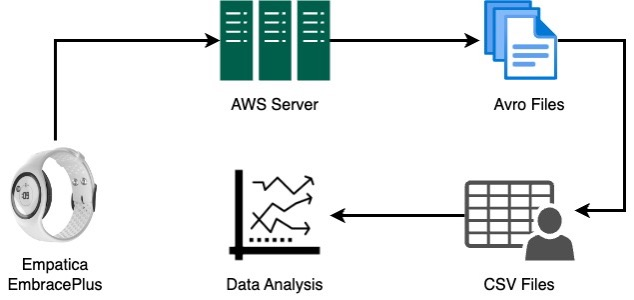
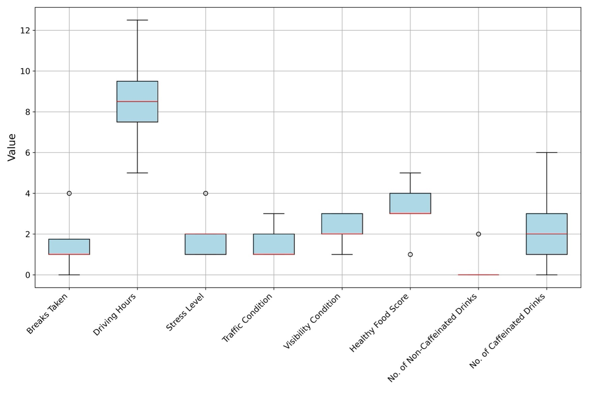
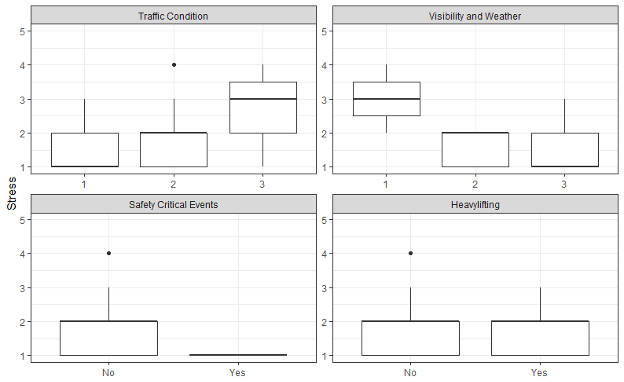
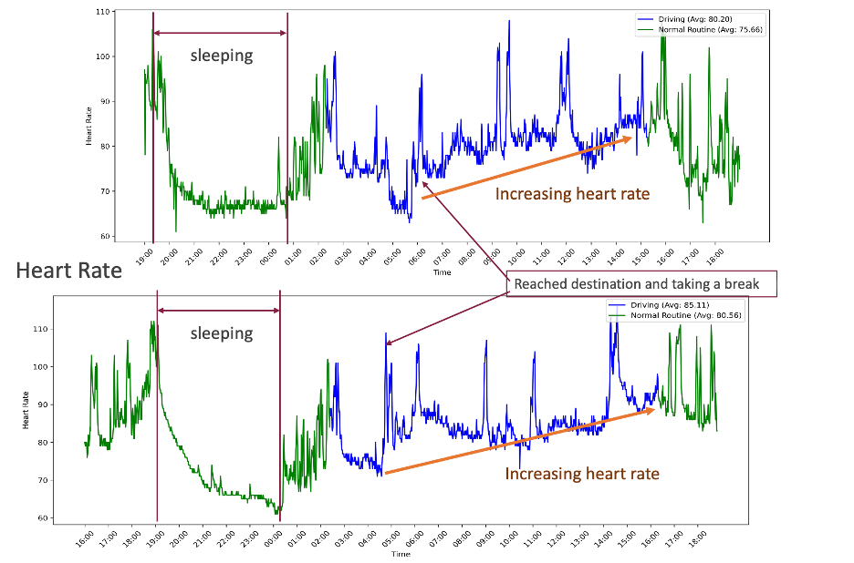
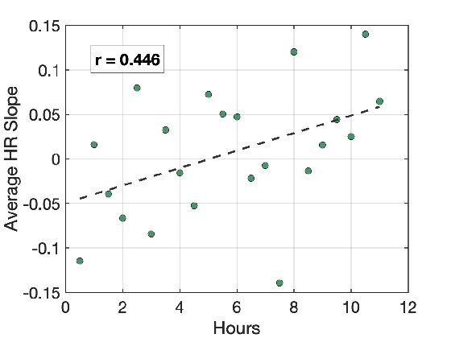
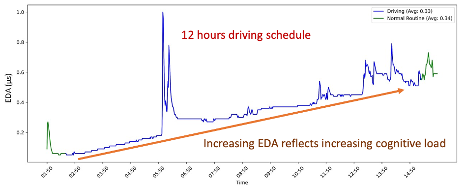

{sthapa, asarkar}@vtti.vt.edu
Understanding driver stress and fatigue in long-haul trucking is critical for improving safety and well-being in a demanding work environment. This study presents findings from real-world usage of the Empatica EmbracePlus, a research-grade wearable capable of monitoring heart rate, HRV, EDA, skin temperature, and movement signals.
Ten professional drivers participated in a multi-day study and completed daily retrospective questionnaires capturing stress, visibility and weather conditions, traffic levels, sleep quality, and workload factors. Reported driving intervals were used to isolate physiological data associated with active driving. Our analysis shows clear distinctions between driving and non-driving states, including progressively elevated heart rates during driving and consistent positive heart-rate increase across morning and midday periods, suggesting increased cognitive demand. EDA also showed rising trends and occasional sharp spikes during extended driving, reflecting heightened arousal during high-demand moments.
Mixed-effects statistical models revealed that self-reported stress was strongly associated with traffic and visibility conditions, aligning with prior findings but adding evidence specific to long-haul commercial operations. Skin temperature showed inconsistent changes and did not emerge as a reliable stress marker, suggesting the influence of cabin conditions. These results show the feasibility of unobtrusive physiological monitoring in real-world trucking and focuses on the value of combining wearable-based signals with contextual self-reports. Insights from this study can inform future fatigue-detection technologies and support interventions aimed at improving driver health and safety.
Professional drivers wore the Empatica EmbracePlus smartwatch continuously on their non-dominant wrist throughout their assigned shifts, collecting heart rate, EDA, HRV, skin temperature, and accelerometry.
10 active commercial drivers (8 male, 2 female) aged 33 to 63 years (median: 50). Weight range was 170 to 360 lbs, representing standard commercial driver distributions.
Data synced via companion smartphones to the Empatica AWS-based secure cloud platform, generating high-resolution Avro files that were parsed locally into CSV files for feature extraction.

The diagram outlines the end-to-end signal processing and analytics pipeline built for this study:
Drivers completed retrospective daily questionnaires at the end of each shift (rating traffic/weather 1-3, stress 1-5). Standard metrics (mean ± SD) show moderate stress, high workload, and regular caffeine consumption:
| Variables | Mean ± SD | Median | Range |
|---|---|---|---|
| Hours Driven | 8.36 ± 1.67 | 8.5 | 5.0 – 12.5 |
| Breaks Taken | 1.20 ± 0.96 | 1.0 | 0 – 4 |
| Stress Rating | 1.72 ± 0.79 | 1.0 | 1 – 3 |
| General Traffic | 1.52 ± 0.61 | 1.0 | 1 – 3 |
| Visibility Condition | 2.28 ± 0.69 | 2.0 | 1 – 3 |
| Quality of Food | 3.22 ± 0.86 | 3.0 | 1 – 5 |
| Caffeinated Drinks | 2.07 ± 1.55 | 2.0 | 0 – 6 |
| Non-caffeinated Drinks | 0.30 ± 0.63 | 0.0 | 0 – 2 |

Figure: Boxplot of survey variables showing the spread of all participant responses. Shift duration remains consistently high (average ~8.4 hours), while daily stress rating and traffic levels reflect typical variability in long-haul trucking environments.
Select a physiological indicator below to view statistical results and real-world signal trends.
Linear mixed-effects models (with driver random effects) revealed a strong correlation between driving conditions and daily reported stress levels.
Statistical Results:
• Traffic Levels: χ2(2) = 8.70, p = .012, partial η2 = 0.16
• Visibility: χ2(2) = 18.41, p < .001, partial η2 = 0.21
Post hoc comparisons using Tukey’s test verified that heavy traffic congestion (score 3) generated significantly higher retrospective stress compared to light conditions (score 1) (t = -2.45, p = .045). In contrast, drivers reported lower stress on days with normal visibility than on days with adverse weather.

Figure: Coefficients of independent survey variables predicting retrospective daily stress levels.
Exploratory signal analysis isolated active driving windows using driver-reported logs. The results indicate clear, sharp physiological boundaries between duty cycles:

Figure: Continuous heart rate signal showing transitions between sleep (green) and active driving shifts (blue) across two example days.
Instead of analyzing absolute values, we calculated the slope of heart rate within consecutive 30-minute intervals. Positive slopes imply gradual increases reflecting mounting cardiovascular effort or vigilance stress.
Correlation Result:
A positive correlation (r = 0.446) exists between accumulated driving hours and average heart rate slope, suggesting that cardiac load rises steadily over time.
Clusters of positive slopes dominate active morning and midday periods, corresponding to heavier traffic and task demand. Negative slopes dominate during typical rest, fuel stops, and post-shift recovery.

Figure: Scatterplot showing positive correlation between average 30-minute heart rate slopes and hours driven.
Electrodermal activity (EDA) serves as an objective marker of sympathetic nervous system activation, strongly reflecting stress responses and mental exertion:

Figure: 12-hour continuous EDA signal showing active driving (blue) vs normal routine (green) with labels highlighting cognitive load trends.
This study demonstrates the feasibility and utility of research-grade wearable sensing (specifically using the Empatica EmbracePlus smartwatch) to track commercial vehicle driver stress and fatigue in naturalistic, real-world fleet operations.
Key takeaways include:
These findings lay the groundwork for developing next-generation active fatigue-detection technologies, informing fleet scheduling, and optimizing driver wellness interventions.
Expanded technical report: A more elaborated report details the broader study design, naturalistic driving context, wearable-data processing, and additional interpretation of the driver stress findings. This report can be found here: https://hdl.handle.net/10919/125068.
If you find this work or dataset insights helpful in your research, please cite our IEEE IV paper and expanded technical report:
@inproceedings{thapa2026characterizing,
title={Characterizing Stress and Fatigue in Long-Haul Truck Drivers through Wearable Sensing and Physiological Measures},
author={Thapa, Surendrabikram and Sarkar, Abhijit},
booktitle={IEEE Intelligent Vehicles Symposium (IV)},
year={2026}
}
@techreport{thapa2025effectiveness,
title={Effectiveness of Wearable Devices to Study Driving Stress of Long-haul Truck Drivers in Naturalistic Driving Systems},
author={Thapa, Surendra Bikram and Sarkar, Abhijit},
institution={National Surface Transportation Safety Center for Excellence},
year={2025}
}